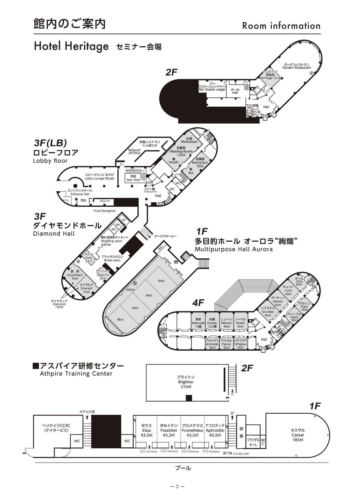

合宿
合宿コンセプト
『ROOT×ROUTE』
我々はいま、ラボの世界の最年長と社会の最年少の狭間で生きている。このジレンマを抜けた先には、今よりも重大な責任や選択が待っているだろう。大学生という子どもから社会人へと変わっていく変遷期を経て未来を強く進むには、自身の武器や経験を生かして自分は何者かということを表していく必要があると考える。 同じ世代を生きる全国の仲間が集まるわかもの合宿。ここには異なる背景を持つ人同士で刺激をし合い、視野を広げ、自己理解を深めるきっかけを生んでくれる。なにより我々はラボで多様な他者との出会い、テーマ活動で目にした多くの表現から得た学びをもとに“今の自分”が形作られている。そのすべてがこれからの人生を歩むためのわたしらしさになる。 北関が提供するわかもの合宿では対話を通して自身を見つめなおし、気づきを表現へとつなげる。そうしてこれからのわたしの輪郭を少しずつ描いていく時間にしていく。参加者が未来を生きる自信を得るきっかけとなってほしい。
会場情報
日時：2026年 3/1(日)～3日(火)
場所：ホテルヘリテイジ 四季の湯温泉(埼玉県熊谷市)
〒360-0103埼玉県熊谷市小江川228
https://www.hotel-heritage.co.jp/
アクセス
【お車】
▶東松山ICより熊谷方面へ約5.3㎞「滑川中学校北」交差点を左折、次の「滑川町役場北」を右折、直進役3.9km
【公共交通機関】
▶電車：東武東上線 森林公園駅で下車、路線バスorタクシーで約15分
▶路線バス：森林公園駅-ふかや花園プレミアム・アウトレット線ホテルヘリテイジで下車運賃380円(交通系IC370円)
館内案内
